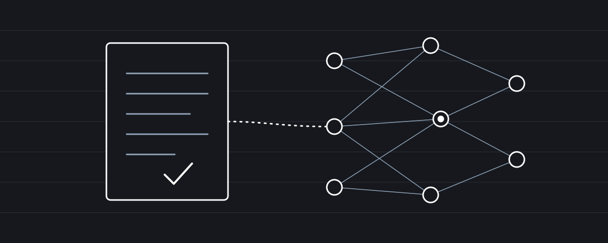
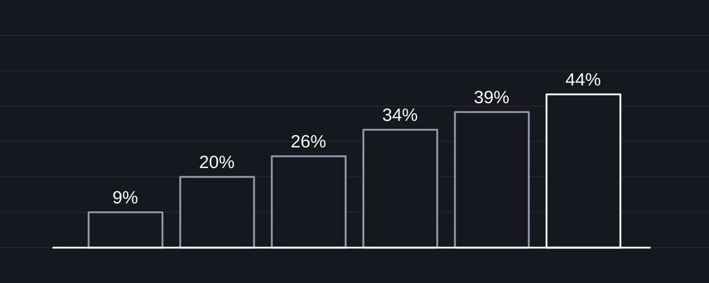
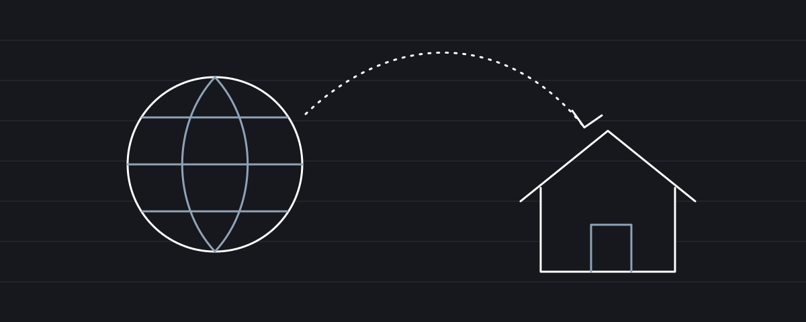

Άρθρα
Κείμενα της Μαρίας Παπαδάκη για τη φορολογία, τη λογιστική πράξη και την τεχνολογία στο γραφείο.

Φορολογία · Ενημέρωση: 6 Νοεμβρίου 2026
Φορολόγηση κρυπτονομισμάτων: ένα πλαίσιο που άργησε, αλλά είναι πλήρες;
Τι προβλέπει το νέο πλαίσιο για τα κρυπτοστοιχεία, πώς συγκρίνεται με την Ευρώπη και ποια ερωτήματα μένουν ανοιχτά για τον λογιστή.

Τεχνολογία · Οκτώβριος 2026
Τεχνητή νοημοσύνη και λογιστικό γραφείο: πόσο έτοιμος είναι ο λογιστής για τον νέο του «βοηθό»;
Πού βοηθά η τεχνητή νοημοσύνη στο γραφείο, ποια είναι τα όριά της και πώς ξεκινά κανείς με ασφάλεια.

Φορολογία · Δεκέμβριος 2025
Νόμος 5246/2025: Η νέα φορολογική μεταρρύθμιση για δημογραφικό και μεσαία τάξη. Τι αλλάζει για μισθωτούς, επαγγελματίες και ιδιοκτήτες
Νέα κλίμακα φόρου, τεκμήρια, ενοίκια και κίνητρα: οι βασικές αλλαγές με μια ματιά.

Ασφαλιστικά · Ιούνιος 2025
Προαιρετική ασφάλιση υπέρ κλάδου υγείας για συνταξιούχους από τρίτες χώρες: όροι και διαδικασία υπαγωγής
Οι προϋποθέσεις, τα δικαιολογητικά, οι εισφορές και η διαδικασία στον ΕΦΚΑ, στα ελληνικά και στα αγγλικά.

Φορολογία · Ιούλιος 2023
Κάτοικοι εξωτερικού: μεταβολή φορολογικής κατοικίας, διαδικασία και νομικό πλαίσιο
Ποιοι θεωρούνται φορολογικοί κάτοικοι Ελλάδος και τι χρειάζεται για τη μεταφορά της κατοικίας.